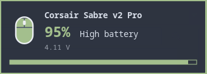

One command, three outputs
A readable line, just the percentage for scripts and bars, or a notification coloured from green to red.
Linux desktop tools / Evilchuck666
Battery level of the Corsair Sabre v2 Pro wireless mouse on Linux: in the terminal, in your status bar or in a desktop notification, read straight from the USB receiver.
Python · hidraw · udev · libnotify · dunst
In use

$ sabre-bat
Sabre v2 Pro: 95% (4118 mV, flag=0)
$ sabre-bat --quiet
95
$ sabre-bat --notifyA readable line, just the percentage for scripts and bars, or a notification coloured from green to red.
Talks to the receiver over hidraw with a udev rule, so it needs no daemon, no sudo and no Python packages.
Ships a desktop entry, so rofi or any app menu can pop up the level, and a keyboard shortcut works too.
Get started
Install SabreBat and its udev rule, then plug the receiver back in so the rule applies. On Arch-based distributions the AUR package installs the rule, the desktop entry and the icon for you. See the README for status bars and shortcuts.
SabreBat is in the AUR ↗, with its udev rule, desktop entry and icon.
yay -S sabrebat
# or: paru -S sabrebatInstall the udev rule ↗ as /etc/udev/rules.d/70-sabrebat.rules and replug the receiver, then:
pip install SabreBat
sabre-bat
sabre-bat --notify